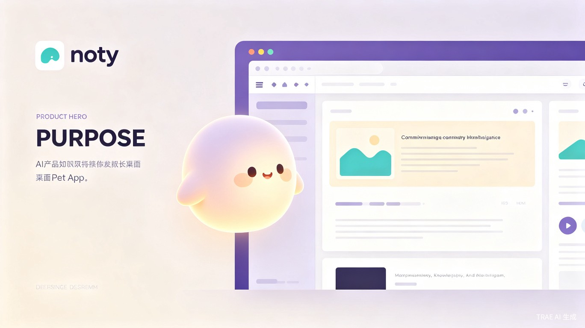
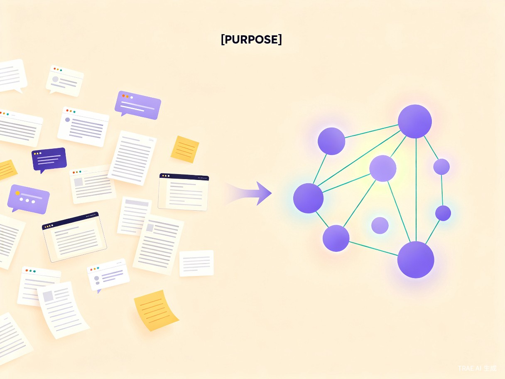

noty
一个主动陪你思考的 AI 知识宠物
常驻桌面的知识陪伴工具，让碎片信息沉淀为你的个人知识网络

核心卖点
noty 不是传统笔记软件，而是一个常驻桌面的 AI 知识陪伴体。它在你阅读、思考、对话时随时待命，主动帮你完成从记录到沉淀的全过程。
低摩擦记录
一键拖拽摘录、链接或想法给桌宠，无需打开复杂界面，不打断你的阅读心流。
AI 自动整理
自动阅读链接、提炼摘要、生成标签、建立知识关联，把碎片组织成可检索的知识网络。
主动回顾提问
基于你的知识库主动发起回顾，帮你发现主题线索、连接旧想法，让知识真正内化。
本地优先
数据本地存储，支持导出到 Notion、Obsidian，你的知识资产永远属于你自己。
问题洞察

信息很多，知识很少
我们每天阅读公众号、论文、网页、社交媒体，也与 GPT、Claude 大量对话。但真正有价值的信息散落在聊天记录、浏览器标签和各个工具里，看完就忘，聊完就散。
用户不是没有知识输入，而是缺少一个足够低摩擦、能持续陪伴、能主动整理和回顾的「外挂大脑」。
"很多好内容看完就散掉了，和 AI 讨论完的思路也很难再次利用。"
产品形态
noty 是一个本地优先的桌面 AI 应用，以「桌宠」为交互入口，让知识管理变得像养宠物一样自然、有陪伴感。
随时投喂
复制文字、拖拽链接、语音输入想法，一键丢给桌宠
AI 消化
自动阅读内容、提炼摘要、生成标签、识别关联
知识归档
写入本地知识库，同步至 Notion / Obsidian
主动回顾
基于 RAG 问答、主动提问、连接旧知识
目标用户
核心用户是高频阅读、学习、研究和思考的人群，以及经常使用 AI 工具辅助学习和工作的用户。
AI 产品经理
需要持续学习前沿技术、整理竞品调研和思考框架
研究员 & 学生
大量阅读论文、做笔记、构建学科知识体系
内容创作者
收集灵感、整理素材、追踪话题脉络
独立开发者
记录技术方案、整理文档、复盘项目经验
AI 重度用户
希望把与 AI 对话产生的灵感沉淀为可复用资产
使用场景
阅读时
看到公众号深度文章、论文或技术博客，一键把链接丢给 noty，AI 自动提炼核心观点并归档。
思考时
灵光乍现或和 AI 对话产生新思路，快速语音或文字记录，noty 帮你打上标签、建立关联。
回顾时
一周后 noty 主动弹出：「你上周记录的关于 RAG 的 3 篇文章，要和今天这篇对比看看吗？」
提问时
向桌面宠物提问：「我之前看过关于多 Agent 协作的资料有哪些？」基于个人知识库精准回答。
价值与意义
效率提升
把「复制、总结、打标签、归档、回顾」交给 AI，用户只需最低成本输入。noty 不仅记录信息，更能理解信息之间的关系，帮助用户从碎片中发现主题和长期思考线索。
商业价值
随着 AI 工具普及，「如何管理和复用 AI 时代知识资产」将成为刚需。noty 可发展为本地优先的个人 AI 知识伴侣，连接桌面端、移动端、浏览器和多款笔记生态，面向知识工作者提供长期订阅服务。
未来规划
MVP 验证
- 桌面悬浮窗 + 快捷录入
- AI 摘要与标签生成
- 本地知识库存储
- Notion 导出集成
智能增强
- 基于知识库的 RAG 问答
- 主动回顾与知识连接
- Obsidian / Logseq 插件
- 浏览器剪藏扩展
生态扩展
- 移动端同步与语音输入
- 多模态内容支持（图片、PDF）
- 社区模板与知识市场
- 企业版团队协作空间